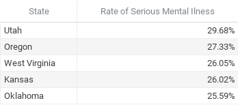
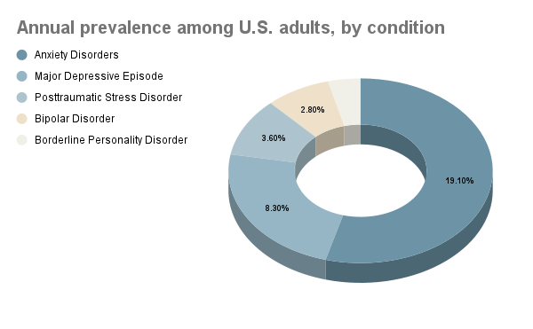

The map above displays the percentage of people suffering from a mental illness in each US state.
The colors range from dark to light blue, dark indicating a higher percentage.
The prevalence rate ranges from 17.49% in Florida to 29.68% in Utah.
Mental Health
The tables below depict the top 5 highest and lowest states when accounting for rate of serious mental illness.
5 states with the highest rates of serious mental illness:
5 states with the lowest rates of serious mental illness:
Annual prevalence among U.S. adults, by condition
In 2021, 22.8% of U.S. adults (57.8 million) experienced some kind of mental illness. This means that roughly 1 in 5 adults were affected.
The current most prevalent mental illnesses in the United States, as shown in the graph above are; Anxiety, Depression, PTSD, Bipolar disorder and BPD.
Most demographics are affected by these disorders, however they are more prevalent among the LGBT (50.2%), Multiracial (34.9%) and American Indian communities (26.6%).
Sources
Mental Health Statistics by State [Updated May 2023]
Mental Health By the Numbers | NAMI: National Alliance on Mental Illness